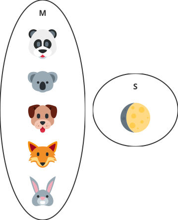
👈 This book is optimized for PDF output. Download the PDF from the sidebar or menu.
8 Sets and Functions
As we saw before, sets are a collection of objects. We have encountered prominent examples like \(\color{red}{\mathbb{N}}\), the set of counting or natural numbers, \(\color{blue}{\mathbb{Z}}\), the set of integers, positive and negative, and \(\color{purple}{\mathbb{Q}}\), the rational numbers.
We also made up other examples, such as \(M\), a set of mammals, and \(S\), the set of the natural satellites of Earth.
\[ M=\left\{\text{\style{font-size:1em}{🐨}}, \text{\style{font-size:1em}{🐶}}, \text{\style{font-size:1em}{🐼}}, \text{\style{font-size:1em}{🦊}}, \text{\style{font-size:1em}{🐰}} \right\} \]
\[ S = \left\{\text{\style{font-size:1em}{🌕}}\right\}. \]
These sets can also be represented with Euler-Venn diagrams.
In this chapter, we will learn how to define relationships between sets, including those between a set and itself. We will also introduce the concept of a function, a specific type of relationship between sets.
8.1 Relationships between sets
Given two sets, \(A\) and \(B\), we can define a mapping, or relationship, that maps or projects elements of \(A\) onto elements of \(B\).
For instance, suppose that \(A\) is a set of children, such as you and your friends. Set \(B\) is a set of their moms. We can define the relationship “being the mom of”  that maps every child in \(A\) onto his/her mom in \(B\).
that maps every child in \(A\) onto his/her mom in \(B\).
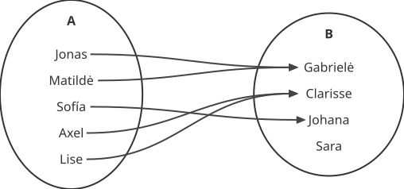
A function is a rule that maps the elements of one set onto the elements of another. In the following example, the function \(f\) maps an animal’s image to its English name.
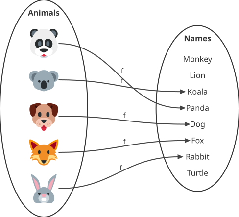
We call the set of Animals the domain of the function \(f\). The function \(f: \text{Animals} \to \text{Names}\) is the rule that allows us to map an animal image to its English name. For example:
\[ f(\text{\style{font-size:1em}{🐰}}) = \text{Rabbit} \]
We say that Rabbit is the image of  .
.
The previous example is a function because every animal in the set Animals is mapped to exactly one Name.
However, imagine that we discover a new animal for which we have no English name yet. The following mapping is not a function because at least one element in the domain does not have a known name. The requirement is that every element has exactly one.
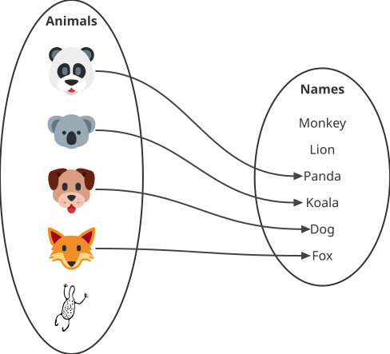
Similarly, if an animal has two names, That relationship is also not a function because every element in the domain must have exactly \(1\) image.
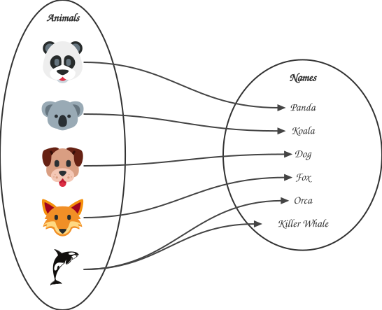
8.2 Exaples of functions
The function \(g: L \to G\) maps the Latin alphabet onto the Greek alphabet.
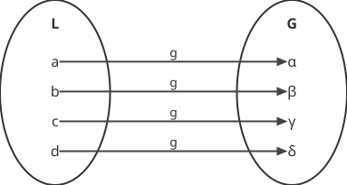
The function \(h: \text{Kids} \to \text{Food}\) maps a set of kids to their favorite food.
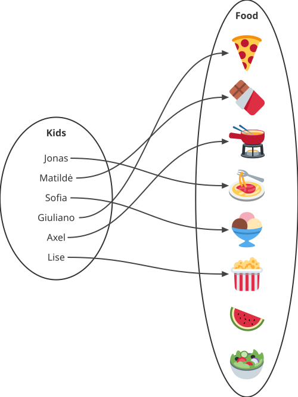
Finally, a function can also map a set to itself. For example, consider the function \(f: \mathbb{Z} \to \mathbb{Z}\), which maps every integer to its square.
\[ f(x) = x^2, \quad \text{for every } x \in \mathbb{Z} \]
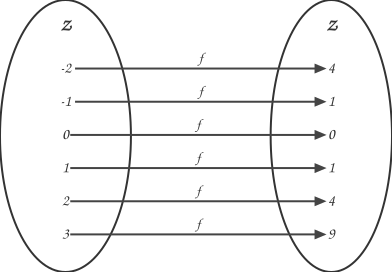
A more trivial example is the identify function \(f: \mathbb{Z} \to \mathbb{Z}\)
f(x) = x
which maps every integer to itself.
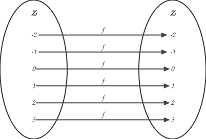
Exercises
The following examples show a mapping that connects cities in Switzerland to cities in Italy. Determine whether this mapping is a function and explain your answer.
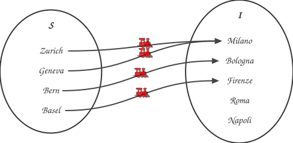
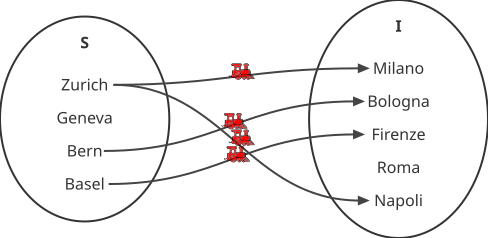
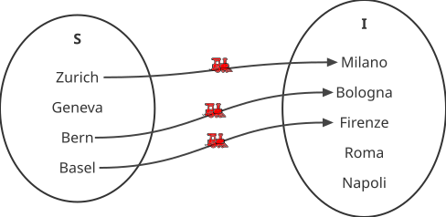
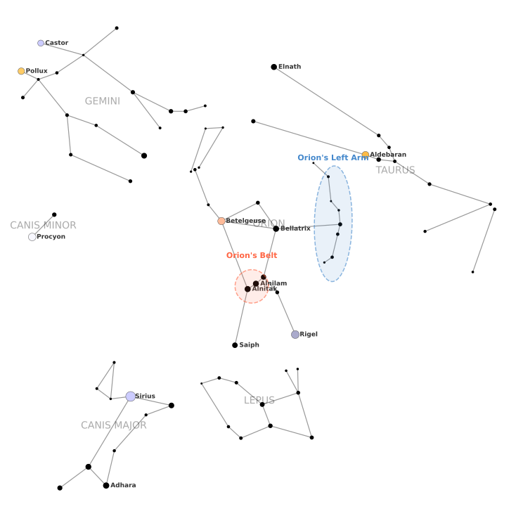
Let the mapping \(c: \text{Star} \to \text{Constellation}\) be the mapping of a star to the constellation to which it belongs. Draw the mapping between the sets Star and Constellation, and explain whether this mapping is a function.
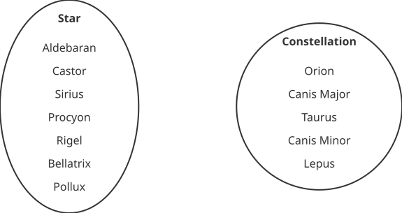
It is possible to represent numerical relationships, such as the function \(f:\mathbb{Z} \to \mathbb{Z}\), defined as \(f(x) = x^2\), which maps every integer to its square, on a Cartesian plane.
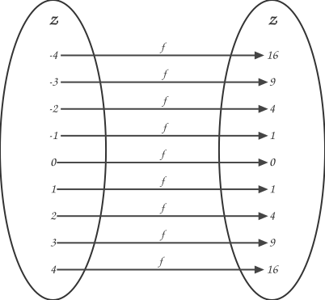
Take every pair of elements: an element in \(A\) and its image in \(B\), and locate them on the Cartesian plane as follows: the element in \(A\) is the x-coordinate, and the element in \(B\) is the y-coordinate.
In the following figure, I added the first three pairs: \((-4, 16)\), \((-3, 9)\), and \((-2, 4)\). Add the rest, and then connect those points with a line in the same order. First, connect \((-4, 16)\) to \((-3, 9)\), then \((-3, 9)\) to \((-2, 4)\), and so on.
8.3 Inverse of a function
We encountered in the examples a function \(g: L \to G\) that maps Latin letters into Greek ones.

Imagine that we want to do the opposite, namely mapping Greek letters into Latin ones.
To to this, we need to reverse the mapping. We need a new function, let’s call it \(h\), that maps Greek into Latin, \(h: G \to L\).
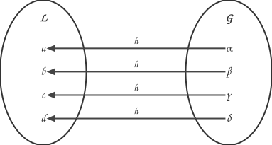
In a way, this function \(h: G \to L\) undoes what the function \(f: L \to G\) does, and we call \(h\) the inverse function of \(f\). We denote the inverse as \(h = f^{-1}\).
Let’s consider another example to answer this question. As you saw in the exercises, the following mapping \(f: S \to I\) is a function because every element in \(S\) has exactly one image in \(I\). In other words, every city in Switzerland is connected to at most one city in Italy.
Unfortunately, the holidays are over, and we have to travel back from Italy to Switzerland. We need a function that goes in the opposite direction. This function is called the inverse of \(f\), and we use the symbol \(f^{-1}\) for it.
We need a new function \(g:I\to S = f^{-1}\), that undoes \(f: S\to I\).
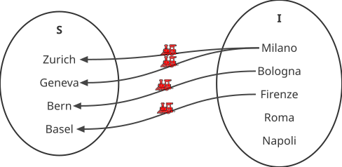
We see that the answer to both questions is no. There are no trains leaving from Rome and Napoli, and Milano is connected to more than one city in Switzerland. Therefore, the mapping $g: \(I\to S\) is not a function. Therefore, the function \(f: S \to I\) is not invertible.
For a function to be invertible, an additional condition is needed.
TipInvertible functions
A function between two sets \(A\) and \(B\), \(f:A\to B\), is invertible if every element in \(B\) is the image of exactly one element in \(A\). In other words, the function must implement a one-to-one correspondence between the two sets. This means that the inverse mapping, \(f' B \to A\), is also a function.
As we saw with the example of mapping Latin letters to Greek letters, this condition is met and the function is therefore invertible.
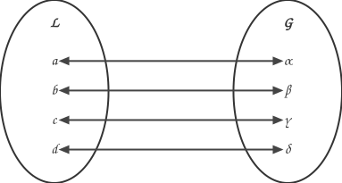
We can fix the function \(f: S\to I\) to be invertible.
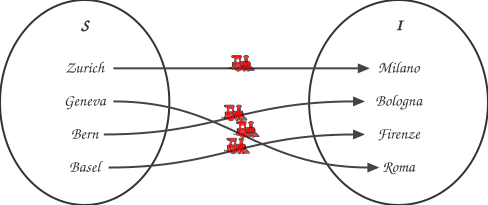
This new function is invertible, meaning that we can always return home from Italy by taking the train in the opposite direction.
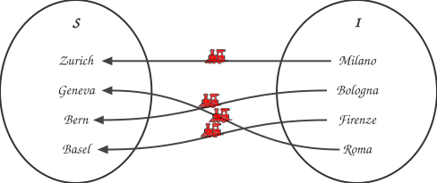
If we take a train from Zurich, we know that we will arrive at f(Zurich), which is Milan. To return to Zurich, we need to take a train to f^(−1)(Milan), which is Zurich. If we take a train from Zurich, we know we will arrive at \(f(\text{Zurich}) = \text{Milano}\). To return to Zurich, we need to take a train to \(f^{-1}(\text{Milano}=\text{Zurich})\).
Exercises
Try reasoning about the inverse function of each of the following functions.
\[\begin{align*} f(x) &= 2 + x \\ f(x) &= 2x \\ \end{align*}\]
8.4 Composition of functions
We saw the example of the function \(f:A \to B\), which is defined as “being the mom of” , and maps an element in \(A\) (a child) onto his/her mom.
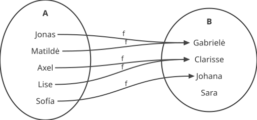
Now, if we introduce a new set, \(C\), consisting of the mother’s fathers, we can define a new function \(g: B \to C\) as the function “being the father of”  that maps an element in \(B\) to her father in \(C\).
that maps an element in \(B\) to her father in \(C\).
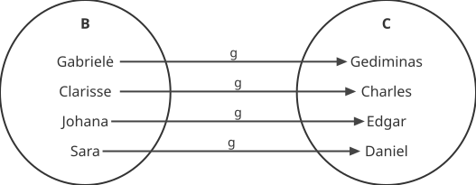
We can compose the two functions, meaning we can apply them one after the other.
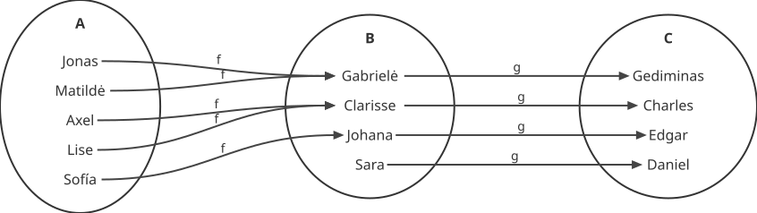
The composition of the functions is denoted by \([g\circ f](x) = g(f(x))\).
This means that we first apply \(f:A\to B\), which sends elements in \(A\) to their moms. For example, it sends \(\text{Jonas} \to \text{Gabrielė}\), because \(f(\text{Jonas}) = \text{Gabrielė}\). Then, \(g:B\to C\) sends elements in \(B\) to their fathers. For example, it sends \(\text{Gabrielė} \to \text{Gediminas}\), because \(g(\text{Gabrielė}) = \text{Gediminas}\).
As a final example, consider the function \(f: \mathbb{Z} \to \mathbb{Z}\) defined as \(f(x) = 2x\), which sends an element to its double, and \(g: \mathbb{Z} \to \mathbb{Z}\), defined as \(g(x) = x + 1\), which increments a number by \(1\).
Here are some examples:
\[\begin{align*} f({\color{red}{3}}) &= 2\times {\color{red}{3}} &= 6\\ f({\color{red}{-2}}) &= 2\times {\color{red}{-2}} &= 4\\ f({\color{red}{1}}) &= 2\times {\color{red}{1}} &= 2\\ g({\color{red}{1}}) &= {\color{red}{1}} + 1 &= 2\\ g({\color{red}{0}}) &= {\color{red}{0}} + 1 &= 1\\ g({\color{red}{-1}}) &= {\color{red}{-1}} + 1 &= 0\\ \end{align*}\]
The composition \([f\circ g](x) = f(g(x))\) will look like this:
\[\begin{align*} [f\circ g](3) &= f(g(3)) &= 2\times (3 + 1) &= 8\\ [f\circ g](-1) &= f(g(-1)) &= 2\times (-1 + 1) &= 0\\ [f\circ g](1) &= f(g(1)) &= 2\times (1 + 1) &= 0\\ \end{align*}\]
The composition \([g\circ f](x) = g(f(x))\) (they are not commutative) will look like this:
\[\begin{align*} [g\circ f](3) &= g(f(3)) &= (2\times 3) + 1 &= 7\\ [g\circ f](-1) &= g(f(-1)) &= (2\times -1) + 1 &= -1\\ [g\circ f](1) &= g(f(1)) &= (2\times 1) + 1 &= 3\\ \end{align*}\]
8.5 Permutations and Symmetries
Imagine that you have a set of unique game cards representing the values \(0, 1, 2, 3\). If you shuffle the cards, they may end up in a different order. For example, they could end up in the order \(2, 1, 0, 3\). We call every reordering of the cards a permutation.
A permutation can be seen as a function—specifically, a one-to-one correspondence, also called a “bijection,” or, in other words, an invertible function that maps a set onto itself.
For example, if we have the set \(\mathbb{Z}_4 = \{0, 1, 2, 3\}\), an invertible function \(f:\mathbb{Z}_4 \to \mathbb{Z}_4\) that reorders the values is called a permutation.
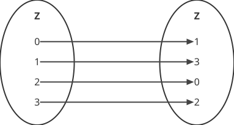
8.6 Symmetries of a Square
Let’s do some bricolage! Print this page and the next one, then cut out the colored squares. Then, glue them together so that the colors match. It’s helpful to print two sets so you can make comparisons. Leave the white square on the page.
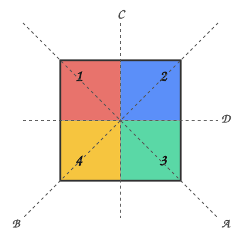
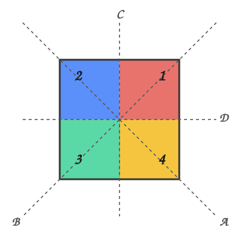
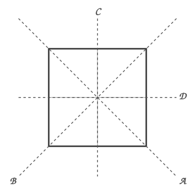
We will now consider shape-preserving or symmetric transformations of this colorful paper square. In other words, this means any rotation or flipping of the square that allows you to superimpose it on the white square on the page without it falling off.
NoteParent/Educator Tip
Explain why rotating the square by \(45\) degrees results in a square that doesn’t fit the original or coincide with the fixed white square left on the page.
TipSymmetry
Symmetry, from the ancient Greek word συμμετρία, is one of the most profound and pervasive concepts in nature and mathematics. It governs our perception of beauty, dictates how energy is conserved, and underpins our understanding of music, physics, chemistry, and the world itself. Symmetry is beautiful and important. In a sense, group theory is the mathematical study of symmetry.
Below are examples of symmetric and asymmetric figures. Source: Wikimedia.
.svg#/media/File:Asymmetric_(PSF).svg){kind=link}
Print this page and cut out the images. Then, fold each image along the vertical, straight line. What is the difference between symmetric and asymmetric figures?
Rotations
One such transformation, for example, is obtained by rotating the square by a quarter (\(\frac{1}{4}\)) turn (\(90\) degrees).
NoteParent/Educator Tip
Here, I am using a passive convention, which means that when we rotate \(90\) degrees, for example, the set of numbers \(\{1, 2, 3, 4\}\) is sent to the set of numbers \(\{4, 1, 2, 3\}\). In other words, \(1\) is mapped to the number that replaces it after the square is rotated while keeping the frame of reference constant. I adopted this convention to make the colors work. It differs from the active convention used in textbooks such as Charles Pinter’s wonderful book on abstract algebra, in which rotating by \(90\) degrees clockwise sends the set of numbers \(\{1, 2, 3, 4\}\) to the set of numbers \(\{2, 3, 4, 1\}\). In this case, the corner numbers remain fixed, and \(1\) occupies the position previously occupied by \(2\).
The two approaches should be equivalent, even if some of the rotations are reverted.
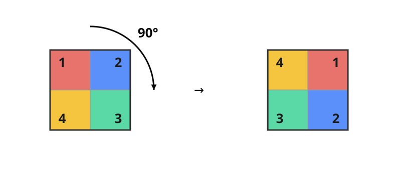
These symmetry-preserving transformations can be thought of as functions that map the set of corners of the square, \(S = \{1, 2, 3, 4\}\), to itself. It is a permutation, \(R:S\to S\).
Rotating the square by one-quarter turn can be seen as a function, \(R_1:S\to S\), that sends the original order, \({1,2,3,4}\), to \({4,1,2,3}\).
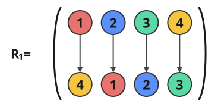
After applying the rotation \(R_1\), \(4\) is in the position that \(1\) was in before, \(1\) is in the position that \(2\) was in before, and so on.
Symmetry is also preserved if we rotate the square by either half (\(180\) degrees) or three-quarters (\(270\) degrees). For example, rotating the square \(180\) degrees can be seen as a function, \(R_2: S \to S\), that maps the original order, \(\{1, 2, 3, 4\}\), to \(\{3, 4, 1, 2\}\).
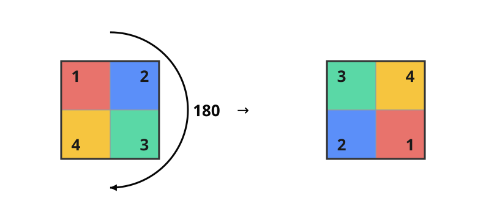
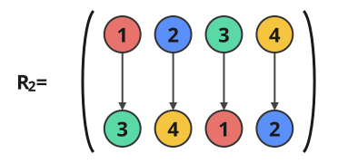
Flips
In addition to rotating the square, we can also flip it around the vertical, horizontal, or diagonal axes. This flipping preserves symmetry, meaning you can still superimpose it on the white square above. Try it yourself!
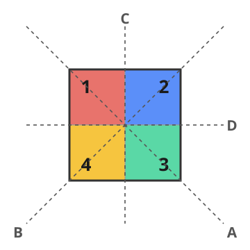
Again, flipping the square along one of its axes can be thought of as a function, \(R: S \to S\), or a permutation.
For example, flipping the square along the axis \(C\) results in:
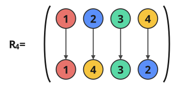
This corresponds to the following mapping:

Another example of a flip is the one around the \(D\) axis.
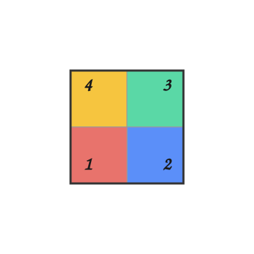
This corresponds to the following mapping:
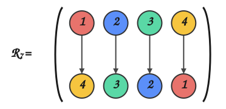
Here is a summary of the symmetries of our colorful square.
| \(f: S\to S\) | Description |
|---|---|
| \(R_0\) | Identity: do nothing. |
| \(R_1\) | Rotate by \(1/4\) of a turn, \(90\) degrees. |
| \(R_2\) | Rotate by \(1/2\) of a turn, \(180\) degrees. |
| \(R_3\) | Rotate by \(1/4\) of a turn, \(270\) degrees. |
| \(R_4\) | Flip about axis \(A\) |
| \(R_5\) | Flip about axis \(B\) |
| \(R_6\) | Flip about axis \(C\) |
| \(R_7\) | Flip about axis \(D\) |
Since these transformations are invertible functions, they can be composed. Composition simply means performing one operation after another.
For example, take the paper square and apply the transformation.
\[ [R_4 \circ R_1](x) = R_4(R_1(x)) \]
First, we apply \(R_1\), which rotates the square by \(1/4\). Then, we apply \(R_4\), which flips about the axis \(A\), to the result.
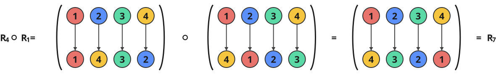
It means that applying \(R_4\circ R_1\), i.e., first rotating by \(90\) degrees and then flipping about axis \(A\), is equivalent to applying \(R_7\), which flips the square about axis \(D\).
Try to convince yourself.
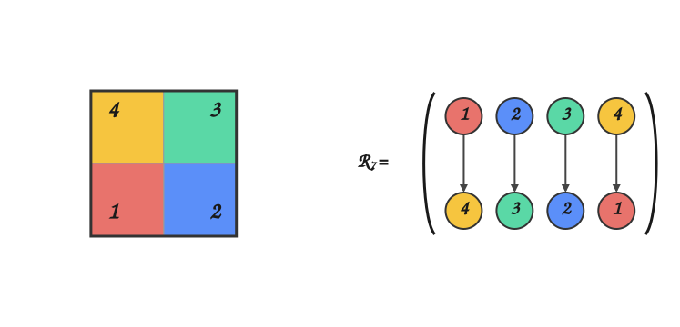
Group of symmetries
The symmetries of the square, \(S_G = \{R_0, R_1, \cdots R_7\}\), forms a group under the operation of function composition, \(\circ\). Remember our checklist? Let’s take a look at the Cayley table of the group.
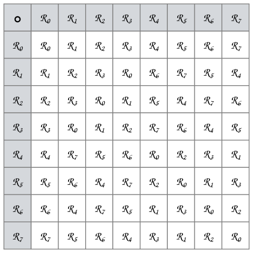
 Closure and associativity: The composition of two elements of \(S_G\) is also in \(S_G\). For example, as we saw above and can verify in the table, \(R_4 \circ R_1 = R_7 \in S_G\).
Closure and associativity: The composition of two elements of \(S_G\) is also in \(S_G\). For example, as we saw above and can verify in the table, \(R_4 \circ R_1 = R_7 \in S_G\).- Existence of an identity element: There is a neutral function, \(R_0\), that sends a permutation to itself. This is illustrated by the highlighted row and column in the following figure.
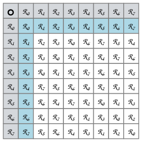
- Existence of an inverse: Every element in \(S_G\) can be mapped to the identity element, \(R_0\), using composition with another element.
For instance all the flipping operations \(R_4 \cdots R_7\) are their own inverse. The inverse of \(R_3\) is \(R_1\) because \(R_3 \circ R_1 = R_0\), as illustrated in the following figure.
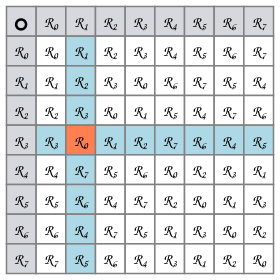
Exercises
Complete the following mappings.
- \(R_3\), rotage by \(270\) degrees.
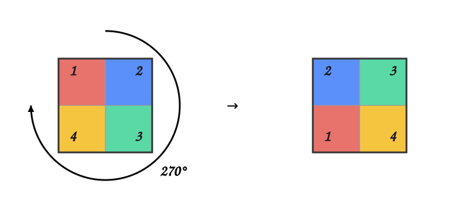
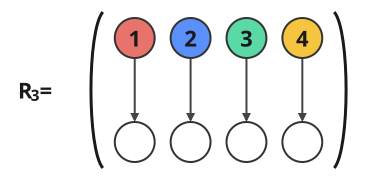
- \(R_5\): flip about axis \(B\).
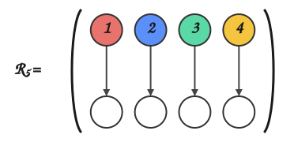
Use your paper square to compute the following operations. Use the Cayley table above to verify.
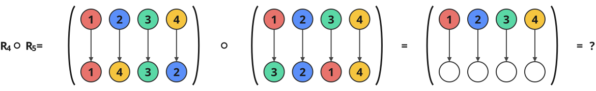
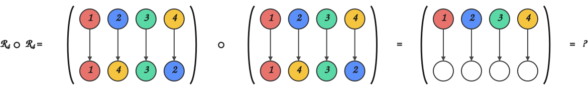
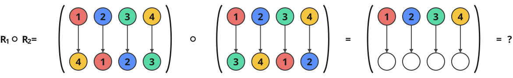
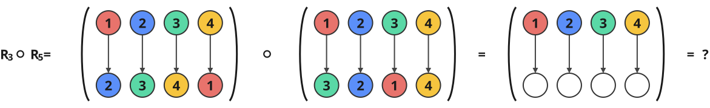